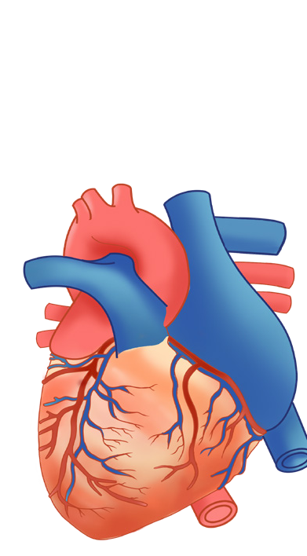

98
Student’s Book - Form Two
Think
Life of a mammal without blood vessels
The mammalian heart
Task 5.1
Search the library and internet sources
for the structure of the mammalian heart.
Then, write short notes on the structure.
The human heart is an example of a mammalian heart. It is located in the center of the chest cavity between the two lungs. Usually, it slightly points to the left side of the chest. Its major function is to pump blood throughout
the body via the blood vessels. Blood circulation enables the supply of oxygen, nutrients, and hormones to cells throughout the body. It also enables transport of carbon dioxide and other wastes from the cells of the body.
The
external
structure
of
the
mammalian heart
The mammalian heart is broader at the top and narrower at the bottom.
It is enclosed in a double layer of tough inelastic membrane called the pericardium. The pericardium is a thick, membranous, fluid-filled sac which encloses, protects, and nourishes the heart. It prevents the heart from over-
Introduction
Complex animals like mammals have an elaborate and efficient transport system called the circulatory system that ensures effective circulation of nutrients, respiratory gases, and other materials in the body. In this chapter, you will learn about the mechanisms for transporting of materials in the human body, which include the mammalian heart, blood vessels, blood and blood circulation. The competences developed will enable you to explore the components and functions of the human circulatory system. You will also be able to maintain a healthy lifestyle that helps to control or prevent some diseases and disorders of the blood circulatory system.

Chapter Five
Transport of materials in mammals
08/04/2026 10:18:28